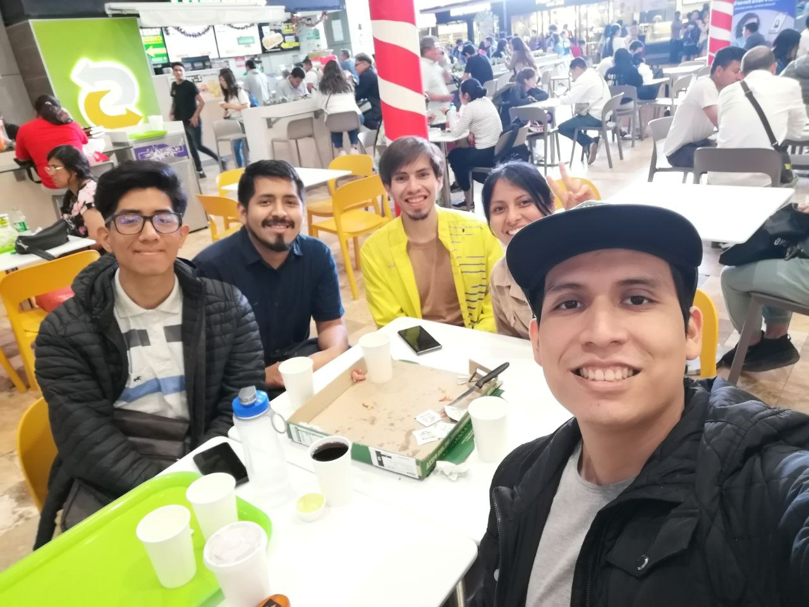

Bienvenidos a esta iniciativa!
Este grupo está conformado por profesionales de psicología y antropología, interesados en aprender métodos computacionales para incorporarlos a nuestros proyectos de investigación.
To get started, you can check out my most popular content below. You can find me on Twitter or GitHub and YouTube. Feel free to reach out to me via mail and subscribe to my email newsletter.
Data Visualization
- This will be filled…
- …when everything i sdfs ready.f adf asd sdf sdf
- Bla bla bla bla sdf s sd fs sdf sdfasdfsf
Stats/ML
- This will be filled…
- …when everything is ready.
- Bla bla bla bla
Dashboards
- This will be filled…
- …when everything is ready.
- Bla bla bla bla
YouTube
- This will be filled…
- …when everything is ready.
- Bla bla bla bla